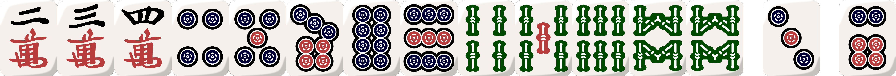

List of Yakus in Japanese Mahjong
I am not good at mahjong, so I made a page directly relating to the yakus needed to win a hand in Japanese Mahjong. This list directly derives from wikipedia. Images of hands provided by hand.chombo.club. Some definitions were slightly modifed by me to help understand what is going on. Japanese Mahjong is sick and you should learn how to play it.
List of Types of Tiles
There are 34 unique tiles and 4 copies of each tile making a total of 136 tiles. These tiles can be broken up into 2 categories:
- Number Tiles (suits): There are 3 different suits of numbers and each of them have a value of 1-9. You can use
these to create sequences(containing three tiles) or triplets. Each suit is called:
- Manzu (Character Tiles): They are labed with Chinese characters from 1-9
- Pinzu (Dots/Circle tiles): These look like circles and contain the number of circles.
- Souzu (Bamboo Tiles): These tiles have bamboo tiles on it. The 1 of bamboo has a bird on it.
- Jinhai (honor/wind tiles): The second category can be split into 2 categories. Honor tiles cannot be used to create
sequences, only triplets:
- Kazehai (Wind tiles): Labeled in the four cardinal direction winds: Ton(East), Nan(North), Xia(West), Pei(South).
- Sangenpai (Dragon tiles): White (not labled), green and red.
Hand Value Worth
A hand contains a value based on how many han does it has. Here are the name and the points associated with the value:
- Mangan: 3 han with 70+ fu, 4 han with 40+ fu, or 5 han. This is worth 8000(for non-dealer)/12000(to dealers)
- Haneman: A hand with 6-7 Han. Worth 12000(non-dealer)/18000(to dealer).
- Baiman: A hand with 8-10 Han. Worth 16000(non-dealer)/24000(to dealer).
- Sanbaiman: A hand with 11-12 han. Worth 24000(non-dealer)/36000(to dealer)
- Yakuman: A hand achieving Yakuman. Worth 32000(non-dealer)/48000(to dealer)
- Multiple Yakumans: A hand that achieves multiple Yakumans. Worth 32000 x (Number of Yakumans)(non-dealer)/48000 x (Number of Yakumans)(to dealer)
So if you some how get this hand for whatever reason:
This is the largest hand possible. It consists of 6 yakumans: Tsuuiisou(All Honors), Suukantsu(4 Kan (4 quads)), Suuankou Tanki(4 Closed Triplets + Pair Draw, Double Yakuman), and Daiisuushii(Four Big Winds, Double Yakuman). This hand is theroetically possible but the chance of getting this hand is ASTRONOMICALLY LOW. You have to draw every tile yourself.
One Han Closed Hand Only
- Menzenchin Tsumohou (Closed Hand Self Draw): Any hand that wins by self-draw.
- Riichi (Waiting on 1 or more tiles to complete a closed hand): Any closed hand that reaches tenpai can declare "riichi". By declaring riichi requires you to bet 1000 points, and announces that you are in tenpai.
- Ippatsu: After declaring riichi, if no one else delcares riichi and you draw the tile you need next turn, you get this han
- Pinfu: A closed hand that scores no fu from its composition at tenpai. To get this han your hand must have the following: All sequences, a pair that isn't yakuhai (a pair that contains honor tiles), and a ryanmen wait (open wait) at tenpai. A ryanmen wait is waiting for 1 tile to complete a sequence. In this case, a 3 or 6 of circles is needed to complete the sequence and hand.
- 
- Iipekou: A hand with two identical sequences.

One Han
- Haitei Raoyue (Under the Sea): Win by drawing the last tile from the live wall
- Houtei Raoyoi: Win with the very last discarded tile
- Rinshan Kaihou: Win with a tile from the dead wall. A tile from the dead wall can come out of the dead wall after a kan.
- Chankan (Robbing a Kan): Win with a tile used for an opponent's added kan. Essentally, the tile needed to complete a kan is stolen to complete a winning hand.
- Tanyao (All Simples): A hand composed with only tiles that are numbered from 2-8.
- Yakuhai: A hand with at least one group of dragon tiles, seat wind, or round wind tiles. Each group is worth 1 han. In this case this would be worth 2 or 3 han based on if we are playing east round or not. This hand is waiting for the 5 of bamboo or the green dragon to complete the hand.
Two Han
- Double Riichi (Closed only): Declare riichi before your first discard, and before any player makes a tile call.
- Chantaiyao (Terminal or honor tile in each group): All tile groups and the pair contain atleast 1 terminal or honor. This hand is waiting for a one of characters or an east tile.
- Sanshoku Doujin (Three-colored straight): Three sequences with the same numbers across 3 different suits.
- Ittsu (Straight): Have sequences "123", "456", "789", all of the same suit. Basically have "123456789" across 1 suit.
- Toitoi (All triplets): The entire hand is composed of triplets (and/or quads). This hand is waiting on the 7 of bamboo or the 4 of circles to get all triplets.
- Sanankou (Three closed triplets): Three closed (and/or quads). Each tile of the three triplets must be formed without calling any tiles; a triplet completed by a ron is NOT closed. The fourth group can be an open triplet or sequence. This hand is waiting on the 5 of bamboo to complete the hand.
- Sanshoku Doukou: Three group of triplets (and/or quads) with the same number. This hands contains triplets with only the 7 suit. Waiting on 5 of bamboo to complete the hand.
- Sankantsu (Three Kan): Three quads of any type.
- Chiitoitsu (Seven Pairs, Closed Hand Only): A hand that contains of seven pairs, all are unique. This hand is waiting on the east tile.
- Honroutou (Terminal and Honors): Every tile is either a terminal or an honor tile.
- Shousangen (Small three dragons): Two triplets (and/or quads) of dragons and a pair of the third dragon. This hand is waiting on either the green or red dragon.
Three Han
- Honitsu (Half-flush, can be open = Lose 1 han): A hand with a single suit with some honor tiles. This hand is waiting on the 6 of circles or the south tile to complete the hand.
- Junchan(can be open = Lose 1 han): All tile groups, and the pair, contain at least one terminal. This hand is waiting on the 1 of characters to complete the hand.
- Ryanpeikou (Two sets of identical sequences, Closed Hand Only): Two sets of "Iipeikou". Does not combine with chiitoistu, even though it can be interpereted as one.
Six han
- Chinitsu (Full Flush): Every tile is a number tile with the same suit. Most valuable yaku outside yakuman.
Yakuman
- Kazoe Yakuman (Counted Yakuman, Can be open): Any hand that scores 13+ han via regular yakus and/or dora.
- Kokushi Muso (Thirteen Orphans, Closed Hand Only): One of each of different terminals and honor tiles plus one extra terminal or honor tile. Can be counted as a double yakuman for Thirteen-Wait Thirteen Orphans.
- OR Thirteen-Wait Thirteen Orphans. Gold tile represents any of the other 13 to make a pair.
- Suuankou (Four Closed Triplets, Closed Hand Only): Have four groups of closed triplets (and/or closed quads). Cannot win with shanpon pattern (waiting for a tile to complete a triplet) and the hand is won by Ron. When this hand has a tanki pattern (you have all triplets, need a pair to complete hand), this yakuman is won by Tsumo or Ron. In this hand below, the player has to draw a red dragon or an east to obtain yakuman.
- Daisangen (Three Big Dragons, Can be open): Have three groups (triple or quad) of all of the dragons.
- Shousuushii (Small Winds, Can be open): Have three (triplet or quad) of the wind tiles, plus a pair of the fourth kind.

- Daisuushii (Big Winds): Have four groups (triplet or quad) of all four wind tiles. Can be considered a Double Yakuman on some rulesets.
- Tsuuiisou (All Honors): Every tile is an honor tile.
- Chinroutou (All Terminals): Every tile is an terminal tile.
- Ryuuiisou (All Green): Every tile is a green tile, which incluides 2, 3, 4, 6 and 8 Sou and/or Hatsu.
- Chuuren Poutou (Nine Gates, Closed Hand Only): A hand consisting of "1112345678999" in the same suit, plus any one extra tile of the same suit
- Suukantsu (Four Kan): Any hand with four calls of kan.
Inital Yakumans
- Tenhou (Blessing of Heaven): The dealer has a winning hand by their first draw.
- Chiihou (Blessing of Earth): A non-dealer has a winning hand by their first draw. In addition, no player can make tile calls before then.